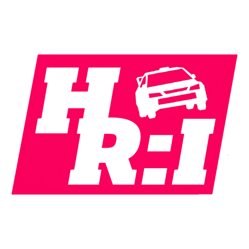
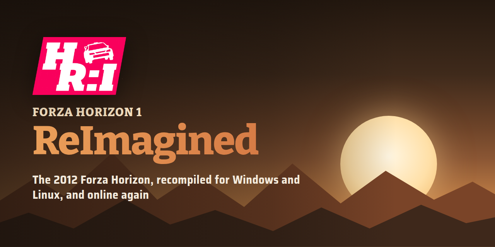

Press
Press kit
Forza Horizon 1: ReImagined runs Forza Horizon (Xbox 360, 2012) natively on Windows and Linux. The original executable is statically recompiled to C++ on the player's own PC, from their own copy of the game; the project distributes no game code or assets. The official online services for the game closed on 22 August 2023 (Turn 10's notice), and the project's own server, Forza Live, brings online play back, publicly or self-hosted.
Facts
- Online. Horizon World free roam for up to 8 players per world, leaderboards, Rivals, friends, chat, car clubs and a co-op festival, on a public server or a server you host. Players' photos and designs are shown on this site.
- Native on PC. Windows (Vulkan or Direct3D 12) and Linux (Vulkan), with Title Update 4, the 23 DLC packages, mods, HD texture packs and a frame rate you set, up to 240. The launcher builds the game from the player's own copy and updates itself.
- Free software. The game and its launcher are under the GPL-3.0-or-later; the server and this website are under the AGPL-3.0-or-later. Not affiliated with, endorsed by or sponsored by Microsoft, Playground Games or Turn 10 Studios.
Logo and social preview





Screenshots
Captured from the recompiled game and its launcher. The game's art belongs to Microsoft.


Links and contact
- Code and releases: github.com/FH1-ReImagined/ForzaHorizon1-ReImagined (latest release)
- Discord: discord.gg/yu7zScdcWw
- Leaderboards: forza.dyotson.dev/leaderboards.html
- Questions: ask on the Discord or open an issue on the repository.